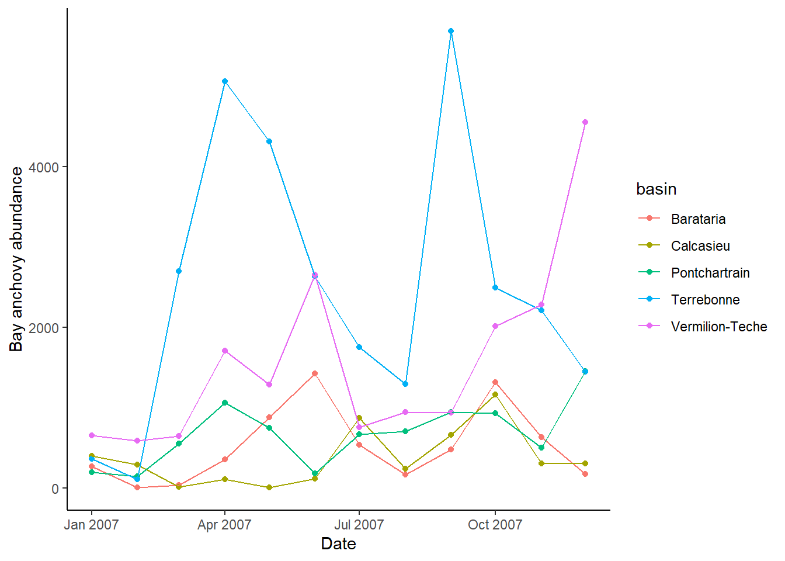
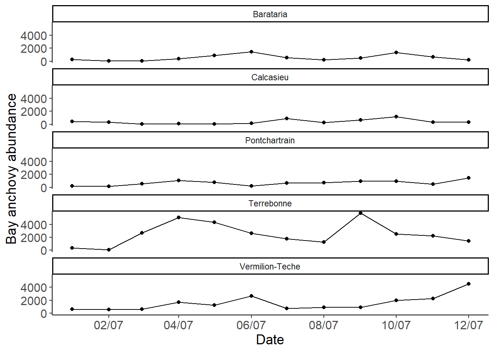

library(tidyverse)Workshop 2: Introduction to R
Tidyverse, data wrangling, and ggplot
This workshop continues basics of R working more with tidyverse, data wrangling, and ggplot:
- Indexing
tidyverse- tidy data
- piping Working with dataframes
- Combining dataframes and tibbles
- Figures with
ggplot2- Combining plots
- Practice Exercises
R script: github
Resources to create R project
Indexing
Once data is stored in an object, being able to retrieve those values is useful. Referred to as indexing, the syntax is specific to how the data is stored. With indexing specific values within your object can be modified.
#First lets bring a dataset from R and assign it to an object
mtcars_df = mtcars
#Convert to data.frame to tibble
mtcars_df = as_tibble(mtcars_df)
#Use "$" to call or index a specific column
mpg = mtcars_df$mpg
gear = mtcars_df$gear
#Use brackets [] to call a specific value position within a vector or
# or column within a dataframe
#fifth object
mpg[5]
## [1] 18.7
mpg #Let's check
## [1] 21.0 21.0 22.8 21.4 18.7 18.1 14.3 24.4 22.8 19.2 17.8 16.4 17.3 15.2 10.4
## [16] 10.4 14.7 32.4 30.4 33.9 21.5 15.5 15.2 13.3 19.2 27.3 26.0 30.4 15.8 19.7
## [31] 15.0 21.4
# vector
b = 1:15
# 3rd object
b[3]
## [1] 3
# make a character vector
c = c('a', 'b', 'c')
c
## [1] "a" "b" "c"
# 2nd object
c[2]
## [1] "b"
# change
c[2] = 'new'
c
## [1] "a" "new" "c"
#Indexing within a table: [rows, columns]
# first row
mtcars[1,]
## mpg cyl disp hp drat wt qsec vs am gear carb
## Mazda RX4 21 6 160 110 3.9 2.62 16.46 0 1 4 4
# 2nd row of first column
mtcars[2,1]
## [1] 21
## [1] 21
# can call specific columns (called as a vector)
mtcars$mpg
## [1] 21.0 21.0 22.8 21.4 18.7 18.1 14.3 24.4 22.8 19.2 17.8 16.4 17.3 15.2 10.4
## [16] 10.4 14.7 32.4 30.4 33.9 21.5 15.5 15.2 13.3 19.2 27.3 26.0 30.4 15.8 19.7
## [31] 15.0 21.4
# specific row (value) in specific column
mtcars$cyl[1]
## [1] 6Creating and indexing lists
List = a collection of objects (e.g., vectors, data.frames, matrices, lists) assigned to a object or list
list_example = list(a = seq(20,30, by = 5), b = c('a', 'b', 'c'), c = mtcars_df)
#Calling a object within the list
list_example$a #Element name a
## [1] 20 25 30
list_example[1] #Preserving - new list with only with first element
## $a
## [1] 20 25 30
list_example[[1]] #Simplifying - first element of list
## [1] 20 25 30
list_example$c
## # A tibble: 32 × 11
## mpg cyl disp hp drat wt qsec vs am gear carb
## <dbl> <dbl> <dbl> <dbl> <dbl> <dbl> <dbl> <dbl> <dbl> <dbl> <dbl>
## 1 21 6 160 110 3.9 2.62 16.5 0 1 4 4
## 2 21 6 160 110 3.9 2.88 17.0 0 1 4 4
## 3 22.8 4 108 93 3.85 2.32 18.6 1 1 4 1
## 4 21.4 6 258 110 3.08 3.22 19.4 1 0 3 1
## 5 18.7 8 360 175 3.15 3.44 17.0 0 0 3 2
## 6 18.1 6 225 105 2.76 3.46 20.2 1 0 3 1
## 7 14.3 8 360 245 3.21 3.57 15.8 0 0 3 4
## 8 24.4 4 147. 62 3.69 3.19 20 1 0 4 2
## 9 22.8 4 141. 95 3.92 3.15 22.9 1 0 4 2
## 10 19.2 6 168. 123 3.92 3.44 18.3 1 0 4 4
## # ℹ 22 more rows
list_example[3]
## $c
## # A tibble: 32 × 11
## mpg cyl disp hp drat wt qsec vs am gear carb
## <dbl> <dbl> <dbl> <dbl> <dbl> <dbl> <dbl> <dbl> <dbl> <dbl> <dbl>
## 1 21 6 160 110 3.9 2.62 16.5 0 1 4 4
## 2 21 6 160 110 3.9 2.88 17.0 0 1 4 4
## 3 22.8 4 108 93 3.85 2.32 18.6 1 1 4 1
## 4 21.4 6 258 110 3.08 3.22 19.4 1 0 3 1
## 5 18.7 8 360 175 3.15 3.44 17.0 0 0 3 2
## 6 18.1 6 225 105 2.76 3.46 20.2 1 0 3 1
## 7 14.3 8 360 245 3.21 3.57 15.8 0 0 3 4
## 8 24.4 4 147. 62 3.69 3.19 20 1 0 4 2
## 9 22.8 4 141. 95 3.92 3.15 22.9 1 0 4 2
## 10 19.2 6 168. 123 3.92 3.44 18.3 1 0 4 4
## # ℹ 22 more rows
#Get the first value within the second object of the list
list_example[[2]][1]
## [1] "a"
#First value of first column on the tibble assigned as the third object in the list
list_example[[3]][[1]][1]
## [1] 21
colnames(list_example[[3]][1])
## [1] "mpg"tidyverse
tidyverse is a collection of packages that use similar syntax and are used for data science in R. Coding in tidyverse is typically easy to read and understand, and has useful functions that have been adopted into newer versions of base R (e.g. piping). Tibbles are the tidyverse version of a dataframe.
c = tibble(c1 = c(1,2,3), c2 = c('a','b','c'))
c
## # A tibble: 3 × 2
## c1 c2
## <dbl> <chr>
## 1 1 a
## 2 2 b
## 3 3 ctidy data
Data is collected and stored in many different ways, which can make it difficult to analyze. One of the goals of tidyverse is to easily turn messy data into tidy data which can easily be analyzed. In tidy data:
- Every column is a variable.
- Every row is an observation.
- Every cell is a single value.
Two functions pivot_longer() and pivot_wider() are useful in manipulating data stored in rows and columns. ***Note that pivot_longer() and pivot_wider() have replaced gather() and spread() in newer versions of tidyverse
#tidying data
stock = tibble(name = c('GOOG', 'AMC', 'GME'),
Jan = c(1000, 2, 4),
Feb = c(1010, 15, 30),
March = c(1005, 25, 180))
df = pivot_longer(stock,
cols = Jan:March,
names_to = 'Month',
values_to = 'Price')
df
## # A tibble: 9 × 3
## name Month Price
## <chr> <chr> <dbl>
## 1 GOOG Jan 1000
## 2 GOOG Feb 1010
## 3 GOOG March 1005
## 4 AMC Jan 2
## 5 AMC Feb 15
## 6 AMC March 25
## 7 GME Jan 4
## 8 GME Feb 30
## 9 GME March 180
# wide format
fish = tibble(species = rep(c('Salmon', 'Cod'),times = 3),
year = rep(c(1999,2005,2020), each = 2),
catch = c(50, 60, 40, 50, 60, 100))
fish
## # A tibble: 6 × 3
## species year catch
## <chr> <dbl> <dbl>
## 1 Salmon 1999 50
## 2 Cod 1999 60
## 3 Salmon 2005 40
## 4 Cod 2005 50
## 5 Salmon 2020 60
## 6 Cod 2020 100
pivot_wider(fish,
id_cols = species,
names_from = year,
values_from = catch)
## # A tibble: 2 × 4
## species `1999` `2005` `2020`
## <chr> <dbl> <dbl> <dbl>
## 1 Salmon 50 40 60
## 2 Cod 60 50 100piping
Tidyverse has an operator %>% known as a pipe that is useful for when you want to do multiple actions to the same data. It takes the output of the left of the %>% and makes it the first argument of what is on the right. Allowing to reduce code and make things tidier. In newer versions of R, there is a base pipe |> that can be used as well. To use |>you will need to turn it on in global options. Note you can use ctrl + shift + m as a shortcut for |>
# this code
df = as_tibble(mtcars)
df = filter(df, mpg > 20)
df = mutate(df, color = 'red')
df = select(df, mpg, cyl, color)
head(df)
## # A tibble: 6 × 3
## mpg cyl color
## <dbl> <dbl> <chr>
## 1 21 6 red
## 2 21 6 red
## 3 22.8 4 red
## 4 21.4 6 red
## 5 24.4 4 red
## 6 22.8 4 red
# can become
df = mtcars %>%
as_tibble()%>%
filter(mpg > 20)%>%
mutate(color = 'red')%>%
select(mpg, cyl, color)
head(df)
## # A tibble: 6 × 3
## mpg cyl color
## <dbl> <dbl> <chr>
## 1 21 6 red
## 2 21 6 red
## 3 22.8 4 red
## 4 21.4 6 red
## 5 24.4 4 red
## 6 22.8 4 red
# or with base r
df = mtcars |>
as_tibble()|>
filter(mpg > 20)|>
mutate(color = 'red')|>
select(mpg, cyl, color)
head(df)
## # A tibble: 6 × 3
## mpg cyl color
## <dbl> <dbl> <chr>
## 1 21 6 red
## 2 21 6 red
## 3 22.8 4 red
## 4 21.4 6 red
## 5 24.4 4 red
## 6 22.8 4 redRenaming and making columns
There are a few different ways to create a new column. The base R way is to use $ with the object name of the dataframe on the left and the new column name on the right. This can be used to do vector operations as well. The other way is to the mutate() function which is part of the dplyr package in tidyverse. This function alows for more flexibility and can be very useful. The easiest way to rename columns is with dplyr functions like rename() or within function like select().
df = tibble(name = c('GOOG', 'AMC', 'GME'),
Jan = c(1000, 2, 4),
Feb = c(1010, 15, 30),
March = c(1005, 25, 180))
df$new = 'new column'
df$tot = df$Jan + df$Feb + df$March
df
## # A tibble: 3 × 6
## name Jan Feb March new tot
## <chr> <dbl> <dbl> <dbl> <chr> <dbl>
## 1 GOOG 1000 1010 1005 new column 3015
## 2 AMC 2 15 25 new column 42
## 3 GME 4 30 180 new column 214
# using mutate
df = df |>
mutate(newCol = 'blue')
# multiple columns at a time
df = df |>
mutate(sum = Jan + Feb + March,
big = sum > 500)
df
## # A tibble: 3 × 9
## name Jan Feb March new tot newCol sum big
## <chr> <dbl> <dbl> <dbl> <chr> <dbl> <chr> <dbl> <lgl>
## 1 GOOG 1000 1010 1005 new column 3015 blue 3015 TRUE
## 2 AMC 2 15 25 new column 42 blue 42 FALSE
## 3 GME 4 30 180 new column 214 blue 214 FALSE
# rename columns
df |>
rename(Name = name, January = Jan, February = Feb)
## # A tibble: 3 × 9
## Name January February March new tot newCol sum big
## <chr> <dbl> <dbl> <dbl> <chr> <dbl> <chr> <dbl> <lgl>
## 1 GOOG 1000 1010 1005 new column 3015 blue 3015 TRUE
## 2 AMC 2 15 25 new column 42 blue 42 FALSE
## 3 GME 4 30 180 new column 214 blue 214 FALSE
# rename, reorder, only include certain columns
df |>
select(Name = name, January = Jan, sum, everything())
## # A tibble: 3 × 9
## Name January sum Feb March new tot newCol big
## <chr> <dbl> <dbl> <dbl> <dbl> <chr> <dbl> <chr> <lgl>
## 1 GOOG 1000 3015 1010 1005 new column 3015 blue TRUE
## 2 AMC 2 42 15 25 new column 42 blue FALSE
## 3 GME 4 214 30 180 new column 214 blue FALSE
# order data frame
df |>
arrange(sum)
## # A tibble: 3 × 9
## name Jan Feb March new tot newCol sum big
## <chr> <dbl> <dbl> <dbl> <chr> <dbl> <chr> <dbl> <lgl>
## 1 AMC 2 15 25 new column 42 blue 42 FALSE
## 2 GME 4 30 180 new column 214 blue 214 FALSE
## 3 GOOG 1000 1010 1005 new column 3015 blue 3015 TRUE
df |>
arrange(desc(sum))
## # A tibble: 3 × 9
## name Jan Feb March new tot newCol sum big
## <chr> <dbl> <dbl> <dbl> <chr> <dbl> <chr> <dbl> <lgl>
## 1 GOOG 1000 1010 1005 new column 3015 blue 3015 TRUE
## 2 GME 4 30 180 new column 214 blue 214 FALSE
## 3 AMC 2 15 25 new column 42 blue 42 FALSESummarizing data
There are a few different useful ways to summarize the data in a dataframe or tibble. If you want to know everything about the dataframe, then the base function summary() is useful. If you would like to have more control to create summary tables, then dplyr::summarize() or dplyr::summarise() are great. This can be paired with group_by() to summarize over specific groups of data.
summary(iris)
## Sepal.Length Sepal.Width Petal.Length Petal.Width
## Min. :4.300 Min. :2.000 Min. :1.000 Min. :0.100
## 1st Qu.:5.100 1st Qu.:2.800 1st Qu.:1.600 1st Qu.:0.300
## Median :5.800 Median :3.000 Median :4.350 Median :1.300
## Mean :5.843 Mean :3.057 Mean :3.758 Mean :1.199
## 3rd Qu.:6.400 3rd Qu.:3.300 3rd Qu.:5.100 3rd Qu.:1.800
## Max. :7.900 Max. :4.400 Max. :6.900 Max. :2.500
## Species
## setosa :50
## versicolor:50
## virginica :50
##
##
##
iris |>
summarize(mean(Petal.Width),
sd(Petal.Width))
## mean(Petal.Width) sd(Petal.Width)
## 1 1.199333 0.7622377
iris |>
group_by(Species)|>
summarize(mean(Petal.Width),
sd(Petal.Width))
## # A tibble: 3 × 3
## Species `mean(Petal.Width)` `sd(Petal.Width)`
## <fct> <dbl> <dbl>
## 1 setosa 0.246 0.105
## 2 versicolor 1.33 0.198
## 3 virginica 2.03 0.275Combining mulitple dataframes
Combining data together is very common, and depending on the type of combination needed.
Binding
If data has the same column names and needs to paste together, then rbind() and dplyr::bind_rows() are the tools need. For rbind(), the column names need to have the same name. bind_rows() does not have this problem.
# bind data together
sal = tibble(species = rep(c('Salmon'),times = 3),
year = c(1999,2005,2020),
catch = c(50, 60, 40))
cod = tibble(species = rep('Cod', times = 3),
year = c(1999,2005,2020),
catch = c(50, 60, 100))
crab = tibble(species = rep('Crab', times = 3),
catch = c(50, 60, 100),
effort = c(20, 30, 50))
rbind(sal,cod)
## # A tibble: 6 × 3
## species year catch
## <chr> <dbl> <dbl>
## 1 Salmon 1999 50
## 2 Salmon 2005 60
## 3 Salmon 2020 40
## 4 Cod 1999 50
## 5 Cod 2005 60
## 6 Cod 2020 100
#Why error?
rbind(sal, crab)
## Error in match.names(clabs, names(xi)): names do not match previous names
#Flexibility on the order
bind_rows(sal, cod)
## # A tibble: 6 × 3
## species year catch
## <chr> <dbl> <dbl>
## 1 Salmon 1999 50
## 2 Salmon 2005 60
## 3 Salmon 2020 40
## 4 Cod 1999 50
## 5 Cod 2005 60
## 6 Cod 2020 100
#vs
bind_rows(sal, crab)
## # A tibble: 6 × 4
## species year catch effort
## <chr> <dbl> <dbl> <dbl>
## 1 Salmon 1999 50 NA
## 2 Salmon 2005 60 NA
## 3 Salmon 2020 40 NA
## 4 Crab NA 50 20
## 5 Crab NA 60 30
## 6 Crab NA 100 50Merge/Join
If two data frames contain different columns of data, then they can be merged together with the family of join functions.
+left_join() = uses left df as template and joins all matching columns from right df +right_join() = uses right df as template and joins all matching columns from left df +inner_join() = only matches columns contained in both dfs +full_join() = combines all rows in both dfs
left = tibble(name = c('a', 'b', 'c'),
n = c(1, 6, 7),
bio = c(100, 43, 57))
right = tibble(name = c('a', 'b', 'd', 'e'),
cals = c(500, 450, 570, 600))
left_join(left, right, by = 'name')
## # A tibble: 3 × 4
## name n bio cals
## <chr> <dbl> <dbl> <dbl>
## 1 a 1 100 500
## 2 b 6 43 450
## 3 c 7 57 NA
right_join(left, right, by = 'name')
## # A tibble: 4 × 4
## name n bio cals
## <chr> <dbl> <dbl> <dbl>
## 1 a 1 100 500
## 2 b 6 43 450
## 3 d NA NA 570
## 4 e NA NA 600
inner_join(left, right, by = 'name')
## # A tibble: 2 × 4
## name n bio cals
## <chr> <dbl> <dbl> <dbl>
## 1 a 1 100 500
## 2 b 6 43 450
full_join(left, right, by = 'name')
## # A tibble: 5 × 4
## name n bio cals
## <chr> <dbl> <dbl> <dbl>
## 1 a 1 100 500
## 2 b 6 43 450
## 3 c 7 57 NA
## 4 d NA NA 570
## 5 e NA NA 600
# multiple matches
fish = tibble(species = rep(c('Salmon', 'Cod'),times = 3),
year = rep(c(1999,2005,2020), each = 2),
catch = c(50, 60, 40, 50, 60, 100))
col = tibble(species = c('Salmon', 'Cod'),
coast = c('West', 'East'))
left_join(fish, col, by = 'species')
## # A tibble: 6 × 4
## species year catch coast
## <chr> <dbl> <dbl> <chr>
## 1 Salmon 1999 50 West
## 2 Cod 1999 60 East
## 3 Salmon 2005 40 West
## 4 Cod 2005 50 East
## 5 Salmon 2020 60 West
## 6 Cod 2020 100 EastFigures with ggplot2
The ggplot2 package is part of the packages that load with tidyverse and has become the standard in ecology. The syntax builds upon on a base function and is very customizable see cheat sheet and R for data science
The base of all ggplot2 begins with ggplot() and geom_...() are built upon them
# read in data
df = read_csv(url('https://raw.githubusercontent.com/SeascapeEcologyLab-workshops/BSC6926-B52_Fall2024/main/data/LDWFBayAnchovy2007.csv'))
## Rows: 60 Columns: 5
## ── Column specification ────────────────────────────────────────────────────────
## Delimiter: ","
## chr (2): species, basin
## dbl (2): num, seines
## date (1): date
##
## ℹ Use `spec()` to retrieve the full column specification for this data.
## ℹ Specify the column types or set `show_col_types = FALSE` to quiet this message.
# plot number of Bay anchovy caught per month
ggplot(df, aes(x = date, y = num))+
geom_point()Show color based on basin number and add line connecting dots
ggplot(df, aes(x = date, y = num, color = basin))+
geom_point()+
geom_line()
Change labels and style of plot
ggplot(df, aes(x = date, y = num, color = basin))+
geom_point()+
geom_line()+
labs(x = 'Date', y = 'Bay anchovy abundance')+
theme_classic()
Modify the size of axis label text and legend position
ggplot(df, aes(x = date, y = num, color = basin))+
geom_point()+
geom_line()+
labs(x = 'Date', y = 'Bay anchovy abundance', color = 'Basin')+
theme_classic()+
theme(axis.title = element_text(size = 14),
axis.text = element_text(size = 12),
legend.position = 'bottom')
Only plot specific range of the dates on x axis
ggplot(df, aes(x = date, y = num, color = basin))+
geom_point()+
geom_line()+
scale_x_date(limits = c(lubridate::ymd('2007-04-01'), lubridate::ymd('2007-10-01')))+
labs(x = 'Date', y = 'Bay anchovy abundance')+
theme_classic()+
theme(axis.title = element_text(size = 14),
axis.text = element_text(size = 12),
legend.position = 'bottom',
legend.title = element_blank())
## Warning: Removed 25 rows containing missing values or values outside the scale range
## (`geom_point()`).
## Warning: Removed 25 rows containing missing values or values outside the scale range
## (`geom_line()`).Split each trial into own grid
ggplot(df, aes(x = date, y = num))+
geom_point()+
geom_line()+
labs(x = 'Date', y = 'Bay anchovy abundance')+
facet_wrap(~basin)+
theme_classic()+
theme(axis.title = element_text(size = 14),
axis.text = element_text(size = 12),
legend.position = 'bottom',
legend.title = element_blank())
Modify the date labels on x axis (list of date abbreviations) and make 1 column of plots
ggplot(df, aes(x = date, y = num))+
geom_point()+
geom_line()+
labs(x = 'Date', y = 'Bay anchovy abundance')+
scale_x_date(date_breaks = '2 months', date_labels = '%m/%y')+
facet_wrap(~basin, ncol = 1)+
theme_classic()+
theme(axis.title = element_text(size = 14),
axis.text = element_text(size = 12),
legend.position = 'bottom',
legend.title = element_blank())
Modify the label and size of strip text
# doesn't change the order
labels = c('Calcasieu' = 'CAL',
'Vermilion-Teche' = 'VER',
'Terrebonne' = 'TER',
'Barataria' = 'BAR',
'Pontchartrain' = 'PON')
ggplot(df, aes(x = date, y = num))+
geom_point()+
geom_line()+
labs(x = 'Date', y = 'Bay anchovy abundance')+
scale_x_date(date_breaks = '2 months', date_labels = '%m/%y')+
facet_wrap(~basin, ncol = 1, labeller = as_labeller(labels))+
theme_classic()+
theme(axis.title = element_text(size = 14),
axis.text = element_text(size = 12),
legend.position = 'bottom',
legend.title = element_blank(),
strip.text = element_text(size = 12))
Remake figure with the mean Abundance and min and max values from each basin and the summarized line through the points
ggplot(df, aes(x = date, y = num))+
geom_pointrange(stat = "summary",
fun.min = 'min',
fun.max = 'max',
fun = 'mean')+
stat_summary(aes(y = num), fun = mean, geom = 'line')+
labs(x = 'Date', y = 'Bay anchovy abundance')+
scale_x_date(date_breaks = '2 months', date_labels = '%m/%y')+
theme_classic()+
theme(axis.title = element_text(size = 14),
axis.text = element_text(size = 12))Make box plot of number of seines per month within each basin
ggplot(df, aes(x = basin, y = seines))+
geom_boxplot()+
labs(x = NULL, y = '# of seines')+
theme_bw()Change order of x axis (make basin order from west to east) and color of plot. Colors can be both hex code or from names that R has. A help website for picking colors is here.
df = df %>%
mutate(basin = factor(basin, levels = c('Calcasieu',
'Vermilion-Teche',
'Terrebonne',
'Barataria',
'Pontchartrain' )))
colors = c('Calcasieu' = 'darkred',
'Vermilion-Teche' = 'cadetblue4',
'Terrebonne' = '#FFC125',
'Barataria' = '#5d478b',
'Pontchartrain' = 'grey55')
ggplot(df, aes(x = basin, y = seines, fill = basin))+
geom_boxplot()+
labs(x = NULL, y = '# of seines')+
scale_fill_manual(values = colors)+
theme_bw()Modify the labels and remove the legend
ggplot(df, aes(x = basin, y = seines, fill = basin))+
geom_boxplot()+
labs(x = NULL, y = '# of seines')+
scale_fill_manual(values = colors)+
theme_bw()+
theme(axis.title = element_text(size = 18),
axis.text.y = element_text(size = 18, colour = "black"),
axis.text.x = element_text(size = 10, colour = "black"),
legend.position = 'none',
legend.title = element_blank())Combining plots
Sometimes we would like to combine different sub figures together to make a single figure. There are a few packages that can do this with ggpubr and patchwork some of the most common. I like ggpubr and use this one, but people seem to like patchwork.
library(ggpubr)
library(wesanderson)
a = ggplot(df, aes(x = basin, y = seines, fill = basin))+
geom_boxplot()+
labs(x = NULL, y = '# of seines')+
scale_fill_manual(values = colors)+
theme_bw()+
theme(axis.title = element_text(size = 14),
axis.text.y = element_text(size = 14, colour = "black"),
axis.text.x = element_text(size = 10, colour = "black"),
legend.position = 'none',
legend.title = element_blank())
b = ggplot(df, aes(x = date, y = num, color = basin))+
geom_point()+
geom_line()+
labs(x = 'Date', y = 'Bay anchovy abundance', color = 'Basin')+
theme_bw()+
scale_color_manual(values = colors)+
theme(axis.title = element_text(size = 14),
axis.text = element_text(size = 12),
legend.position = 'bottom')
# plot combined
ggarrange(a,b,
labels = c('a)','b)'),
ncol = 1)
# arrange vertically and move position of labels
ggarrange(a,b,
labels = c('a)','b)'),
ncol = 1,
align = 'v',
hjust=-1.5)
# common legend
a = ggplot(mtcars, aes(wt, fill = as.character(cyl),
color = as.character(cyl)))+
geom_density(alpha = 0.4)+
labs(x = 'Weight of car (tonnes)',
fill = '# of engine cylinders')+
scale_color_manual(values = wes_palette('GrandBudapest1'),
guide = "none")+
scale_fill_manual(values = wes_palette('GrandBudapest1'))+
theme_bw()+
theme(axis.title = element_text(size = 10),
axis.text.y = element_text(size = 10, colour = "black"),
axis.text.x = element_text(size = 8, colour = "black"),
legend.position = 'bottom',
panel.grid.major = element_blank(),
panel.grid.minor = element_blank(),
strip.text.x = element_text(size = 10),
legend.text = element_text(size = 7))
b = ggplot(mtcars, aes(mpg, color = as.character(cyl),
fill = as.character(cyl)))+
geom_density(alpha = 0.4)+
labs(x = 'Miles/gallon',
fill = '# of engine cylinders')+
scale_color_manual(values = wes_palette('GrandBudapest1'),
guide = "none")+
scale_fill_manual(values = wes_palette('GrandBudapest1'))+
theme_bw()+
theme(axis.title = element_text(size = 10),
axis.text.y = element_text(size = 10, colour = "black"),
axis.text.x = element_text(size = 8, colour = "black"),
legend.position = 'bottom',
panel.grid.major = element_blank(),
panel.grid.minor = element_blank(),
strip.text.x = element_text(size = 10),
legend.text = element_text(size = 7))
c = ggplot(mtcars, aes(wt, mpg, group = cyl, color = as.character(cyl)))+
geom_point(size = 2)+
geom_smooth(method = 'lm',size = 1)+
labs(x = 'Weight of car (tonnes)',
y = 'Miles/gallon',
color = '# of engine cylinders')+
scale_color_manual(values = wes_palette('GrandBudapest1'))+
theme_bw()+
theme(axis.title = element_text(size = 10),
axis.text.y = element_text(size = 10, colour = "black"),
axis.text.x = element_text(size = 8, colour = "black"),
legend.position = 'bottom',
panel.grid.major = element_blank(),
panel.grid.minor = element_blank(),
strip.text.x = element_text(size = 10),
legend.text = element_text(size = 7))
## Warning: Using `size` aesthetic for lines was deprecated in ggplot2 3.4.0.
## ℹ Please use `linewidth` instead.
ggarrange(a,b,c,
labels = c('A','B','C'),
nrow = 2,ncol = 2,
common.legend = F)
## `geom_smooth()` using formula = 'y ~ x'
ggarrange(a,b,c,
labels = c('A','B','C'),
nrow = 2, ncol = 2,
common.legend = T,
legend = 'top')
## `geom_smooth()` using formula = 'y ~ x'
ggarrange(ggarrange(a,b, labels = c('A','B'), common.legend = T),c,
labels = c('','C'),
nrow = 2,
legend = 'none')
## `geom_smooth()` using formula = 'y ~ x'Exercises
Read in the LDWFBayAnchovy2007.csv and create a column that calculates the catch per unit effort (CPUE) for Bay anchovy within the dataframe.
Create a dataframe or tibble that contains the basin names for the LDWFBayAnchovy2007.csv dataset (Barataria, Terrebonne, Ponchartrain, Vermilion-Teche, and Calcasieu) and the and abbreviation for each basin as a new column.
Merge the dataframe/tibbles from exercises 1 and 2.
Plot the CPUE for each basin both over time and as a summary of the entire year using a different color for each basin.